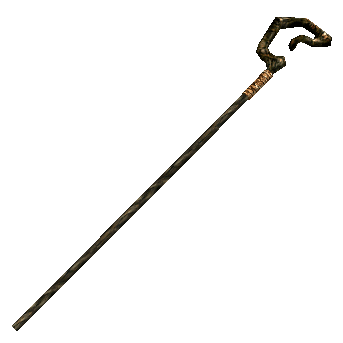
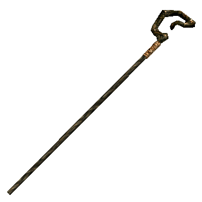

Character Creator
Welcome to the Character Creator.
Here you will find several tools to help you create your D&D character.
Choose a Name, Gender, Alignment, Class, and Race.
Roll to decide your character's Abilities.
Gender: Alignment:
Crusader: Lawful good is the best alignment you can be because it combines honor and compassion.
Rebel: Chaotic good is the best alignment you can be because it combines a good heart with a free spirit.
Benefactor: Neutral good is the best alignment you can be because it means doing what is good without bias for or against order.
Judge: Lawful neutral is the best alignment you can be because it means you are reliable and honorable without being a zealot.
Undecided: Neutral is the best alignment you can be because it means you act naturally, without prejudice or compulsion.
Free Spirit: Chaotic neutral is the best alignment you can be because it represents true freedom from both society’s restrictions and a do-gooder’s zeal.
Dominator: Lawful evil is the most dangerous alignment because it represents methodical, intentional, and frequently successful evil.
Malefactor: Neutral evil is the most dangerous alignment because it represents pure evil without honor and without variation.
Destroyer: Chaotic evil is the most dangerous alignment because it represents the destruction not only of beauty and life but also of the order on which beauty and life depend.
Race:
Dwarves favor earth tones in their clothing and prefer simple and functional garb. The skin can be very dark, but it is always some shade of tan or brown. Hair color can be black, gray, or brown. They average 4 feet tall and weigh as much as adult humans. A dwarf's thick build, hardiness, and crass nature almost guarantees they are a Fighter.
Elves average 5 feet tall and typically weigh just over 100 pounds. They live on fruits and grains, though they occasionally hunt for fresh meat. Elves prefer colorful clothes, usually with a green-and-gray cloak that blends well with the colors of the forest. Their intelligence and longevity gives them an advantage as Wizards.
Gnomes stand 3 to 3-1/2 feet tall and weigh 40 to 45 pounds. Their skin color ranges from dark tan to woody brown, their hair is fair, and their eyes can be any shade of blue. They generally wear leather or earth tones, though they decorate their clothes with intricate stitching or fine jewelry. Gnomes reach adulthood at about age 40, and they live about 350 years. While not the hardiest warriors, they are invaluable as Bards.
Half-elves are not truly an elf subrace, but they are often mistaken for elves. Half-elves usually inherit a good blend of their parents’ physical characteristics while surpassing most of their limitations. They can become adept at almost any class.
These orc–human hybrids live in orc or human society (their status varies according to locals), or in communities of their own. Half-orcs usually inherit a blend of their parents' physical characteristics. They are as tall as humans but heavier, thanks to their muscle. They have greenish skin, sloping foreheads, jutting jaws, prominent teeth, and coarse body hair. Their brawn over brain lifestyle means they are typically Barbarians.
Halflings stand about 3 feet tall and usually weigh between 30 and 35 pounds. Halflings prefer simple, comfortable, and practical clothes. Unlike members of most races, they prefer actual comfort to shows of wealth. They reach adulthood in their early twenties and generally live into the middle of their second century. Halflings make for good Rogues.
Humans have among the greatest variety in their species. With all range of hair and eye colors, and personalities that span the entire spectrum, you can tell much less about a human just by looking at one than other species. It is because of this diversity that they are able to master any class and recieve certain bonuses other races cannot.


Class:
Barbarians are exceptional fighters. They can use almost all weapons and armor, have increased chances to dodge attacks, and are faster than most, but are the only class who is not automatically literate. They have a unique ability to fly into a rage during battle, giving bonuses to Strength, Constitution, and morale while taking a penalty to Armor Class.
Using light armor and simple weapons, Bards are not very battle-worthy. But they are unmatched in their ability to quickly turn the tables in a fight. By casting spells and signing songs, they can boost their ally’s stats dramatically, or drain enemies of their abilities. While not as technically proficient in spell work as Wizards, their songs can be exceedingly powerful.
Clerics gain powers based on their alignment and the gods they serve. They have the unique ability to call on divine spells, which are different based on alignment. Where a Lawful Good alignment proves exceptionally useful for healing allies and boosting stats, a Cleric who follows the gods of Chaotic Evil will wreak havoc on his foes through his spell work.
Druids are perfectly in tune with nature. Their senses are heightened and they can call on druidic spells to summon animals or have nature fight for them. Further, Druids can take on the shape of any animal they are familiar with. They are helpful to parties thanks to their abilities to gather information from nature and surrounding animals.
Where Barbarians fight to draw blood and focus more on dealing damage than worrying about worrying about how much they are taking, Fighters deal with battle as if it were an art. To take a life is not as important as the manner in which it was taken, but taking a blow is a shame. They have a wide variety of physical skills that make them deadly in combat.
Monks are not proficient with armor or skills, but this is far from a weakness. By remaining unarmored and unencumbered they gain a myriad of passive bonuses that makes them deadly even without a weapon. Their skills come not from what they put on their body, but the energy they contain within. By channeling their inner energy they can overtake unsuspecting opponents with ease.
Paladins are the beacon of light that shows their party the way. A versatile class that can be used as a healer or a fighter, Paladins are the tanks of their party. Their high charisma and divine calling make them extremely useful when gathering intelligence in towns, and also makes them among the most feared by anyone aligned with evil.
Spending most of their time in the wilderness, Rangers are very in touch with nature. They fall between Rogue, Druid, and Fighter as their skills are based on the environment and animals around them without a loss to their skill with weapons. A Ranger tends not to be as durable as other fighters, and normally prefers a ranged weapon to stay safe while still keeping an eye on the fight.
Rogues are built for thieving, assassinating, and forging. Their incredible damage output and speed coupled with their ability to bluff, hide, or dodge through most anything makes them incredibly dangerous to fight against, but also makes them a powerful ally. A Rogue’s strength can be turned against him, however, if he is caught out in the open. They must plan before taking rash action.
Sorcerers are not proficient with armor or shields, but their arcane abilities are unparalleled. While Wizards can be more hardy, Sorcerers do not need to prepare spells before casting them and have a much wider range of magics at their disposal. Deadly at long range, they can keep a large number of foes at bay with nothing but the most basic gear.
While Wizards are proficient with weapons, their real strength comes from the arsenal of magic at their disposal. Unlike Bards or Sorcerers, Wizards do not have a limit to how many spells they can learn, but must prepare them before being able to cast them. Having the ability to summon a hippogriff while calling a firestorm makes Wizards deadly in combat as long as they stay behind their hardier allies.


 


Click to roll for your stats. Choose which number to apply to each stat.
To see what a stat does, simply select it below
Measures your muscle & physical power. Especially important for Fighters, Barbarians, Paladins, Rangers, & Monks. Limits carry capacity.
Measures hand-eye coordination, agility, reflexes, & balance. Most important for Rogues, users of light, medium, or no armor, & archers.
Represents your health & stamina. A Constitution bonus increases hit points, so the ability is important for all classes.
Determines how well you learn & reason. Important for Wizards or any character who wants to have a wide assortment of skills.
Describes willpower & common sense. Represents being in tune with & aware of surroundings. Important for Clerics, Druids, Paladins & Rangers.
Measures persuasiveness, leadership, & allure. Affects more than just how one is perceived. Charisma is most important for Paladins, Sorcerers, Bards, & Clerics.